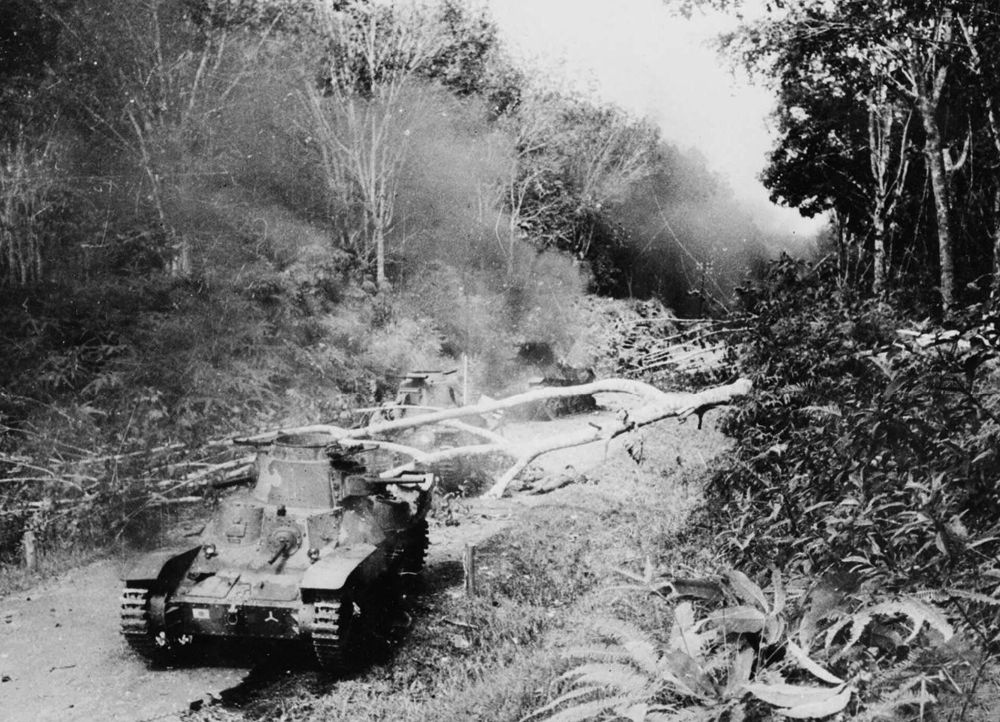

第 26 章
内战熔炉中的番号消解
昆明巫家坝机场的C-47运输机舱门打开时，扑面而来的是云南高原干燥的秋风。这股风与印度兰姆伽训练基地的湿热季风截然不同，却让走下舷梯的中尉作战参谋周振邦产生了一种短暂的错觉——他以为自己终于回到了一个可以称之为“后方”的地方。1945年9月，他的帆布袋里装着缅北战场上用过的作战地图、一本美式步兵操典的油印译本，以及一面叠得整整齐齐的新三十八师师旗。
那是密支那战役后从师部军需官那里领到的纪念品，他一直带在身边，穿越了八莫、南坎，沿着刚刚打通的滇缅公路回到国内。三天后，他领到的第一份文件不是嘉奖令。那是一份油印的部队编制表，抬头上印着新编单位的番号。表格详细列出了从新三十八师、新三十师和第五十师抽调的军官和士兵将被重新分配到哪些单位。周振

芒友会师现场被击毁的日军坦克
图源：维基共享资源 · Unknown · Public domain
邦的名字出现在第三页靠后的位置，分配去向是一个他从未听说过的单位，职务是作战参谋——暂代。
他熟悉的是新三十八师的建制序列：师部、一一二团、一一三团、一一四团，每个团的团长是谁，每个营的营长有什么脾气，甚至某些连长的绰号都记得清楚。
但在这张表格上，那些他在兰姆伽训练营的尘土中反复背诵、在缅北丛林的行军路上不断核对的番号，一个都没有出现。这不是一次寻常的军事调动。这是1945年秋冬之际，中国驻印军主力部队在回国后遭遇的第一道行政命令。而这道命令所开启的，是一场持续数月之久的系统性拆解——远征军的独立番号、战役荣誉和集体记忆，在国内政治的紧急需求面前，被肢解、分散、重新编码。
新一军军长孙立人在1945年9月中旬抵达广州时，他的部队分布在从缅甸北部到云南西部的漫长交通线上。新三十八师主力刚刚完成芒友会师后的清剿任务，新三十师尚在腊戍附近维持秩序，第五十师的先头部队已经沿着滇缅公路进入云南境内。按照盟军东南亚战区司令部与中国军事委员会此前商定的计划，这支全美械装备的精锐部队将承担接收华南各主要城市的任务。
新六军也是已经空运至南京，军长廖耀湘本人参加了9月9日在南京中央陆军军官学校礼堂举行的中国战区受降仪式。这一部署在短短数周内便被彻底改写。改写的力量来自东北。1945年8月9日苏联对日宣战后，苏军迅速进入中国东北。根据8月14日签署的《中苏友好同盟条约》，苏军应在日本投降后三个月内撤出东北，将行政权移交给国民政府。
但当国民政府的接收人员于10月中旬抵达沈阳、长春等城市时，局势远比预想的复杂：中国共产党领导的东北民主联军已经控制了广大乡村和部分中小城镇，苏军的撤退进度也并非如条约所规定的那般顺畅。东北的工业设施——日本经营了十四年的庞大军事工业体系——正在被大规模拆卸运往苏联，当地的政治真空被迅速填补。
国民政府需要军队。需要的不只是数量，也是质量——能够在东北严寒气候下作战、能够操作复杂美式装备、能够在没有稳固后方的情况下独立遂行战术任务的精锐部队。放眼整个国民革命军序列，符合这些条件的部队屈指可数。驻印军是其中最完整的一支。
1945年10月中旬，新一军主力接到命令：在九龙登船，北运秦皇岛。命令传达时，许多军官以为这只是临时性的调动，类似于他们在缅甸战场上经历过的那种战术机动——从一个战区转移到另一个战区，完成任务后再返回原驻地。新三十八师一一三团的一位营长在给家人的信中写到了这种预期与现实的落差：船到香港只停了三天，北上命令就下来了。士兵们还没来得及把缅北穿破的军靴换掉，便登上了去秦皇岛的运输舰。从香港到秦皇岛的海上航程需要五到七天。
运输舰上的条件远远不如他们在印度时乘坐的美军运输船。士兵们挤在货舱里，带着步枪、机枪、迫击炮和弹药箱，还有从缅甸带回来的战利品——日本军刀、军旗、身份牌。十一月的渤海湾已经相当寒冷，海风从舱口灌进来，这些刚从热带丛林归来的士兵第一次感受到了东北的冬天意味着什么。
船到秦皇岛，部队未及休整便登上火车，沿北宁铁路向沈阳方向开进。沿途的景象与缅甸完全不同：没有丛林、没有山地、没有雨季泥泞的红土路，而是一望无际的平原。
收割后的高粱地里残留着枯黄的秸秆，村庄稀疏地散布在铁路两侧。这里是中国东北，面积相当于法国和德国之和，拥有当时中国最密集的铁路网和最发达的工业体系。
但这里的政治温度已经降到了冰点以下。新一军抵达沈阳时，苏军尚未完全撤离。沈阳城内的工厂区——铁西区的机床厂、冶炼厂、兵工厂——正在被拆卸装车，运往西伯利亚。苏军士兵在街头巡逻，对中国军队的到来表现出一种冷淡的漠视。
新一军的先头部队不得不在城郊的临时营房里等待，等待外交层面的交涉完成，等待苏军撤出后的防务交接。等待期间，他们接到了第二道命令。这道命令的内容是：从新一军序列中抽调一部分军官和士兵，补充到东北其他国民党部队中去。理由是加强各部队的作战指挥能力和技术兵种素质。
抽调的比例最初定为百分之十五，随后提高到百分之二十，最终实际执行时接近百分之三十。被抽调的不仅仅是普通士兵，还包括大量在兰姆伽接受过完整美式训练的基层军官——排长、连长、营参谋、团作战参谋。
这些人掌握着当时中国军队中最稀缺的技能：他们懂得如何呼叫空地协同火力，如何计算迫击炮的射击诸元，如何组织后勤补给线的梯次配置，如何阅读美式军用地图上的等高线和坐标网格。周振邦就是在这轮抽调的名单中被划出去的。
他在兰姆伽训练营时，美军教官反复强调过一个观点：一支军队的战斗力不在于它有多少将军，而在于它有多少合格的士官和连排级军官。他在缅北战场上亲眼验证过这个判断——那些在丛林中能够独立判断敌情、果断做出战术决定的班长和排长，往往比后方指挥部里的参谋们更能决定一场遭遇战的胜负。
但现在，这套精心培养的基层指挥体系正在被拆解。拆解的逻辑是明确而冷酷的。国民政府的军事决策者们面临一个现实困境：在东北与共产党武装对峙的国民党部队中，除了新一军和新六军这样的美械精锐之外，还有大量装备较差、训练不足的地方部队和杂牌部队。这些部队在与共产党部队的初期接触中表现不佳，急需补充有经验的作战人员。
驻印军的官兵——那些在缅甸战场上证明过自己的人——是最便捷的人才库。把他们分散补充到各部队中去，理论上可以起到以点带面的效果：一个懂美式战术的排长可以带出一个排，一个会组织后勤的连长可以改善一个连的补给状况。
但这一理论忽略了一个根本性的问题：军队的战斗力不是单兵技能的简单相加。驻印军在缅甸战场上之所以能够打出密支那、孟拱、八莫等一系列硬仗，靠的不是单个优秀士兵的孤军奋战，而是一整套从兰姆伽训练营开始就反复磨合的组织体系。
士兵们知道自己的连长会怎样指挥，连长知道自己的营长会在什么情况下请求炮火支援，营长知道师部的后勤军官会在什么时候把弹药送到前线。这种默契不是靠一纸调令就能移植到陌生部队中去的。更致命的是，当驻印军的基层骨干被抽走后，留在新一军和新六军建制内的部队也遭到了削弱。一个被抽调了三分之一连排长和作战参谋的师，其战术执行能力必然大打折扣。
而补充进来的新兵——那些在东北当地招募或从其他部队转隶过来的士兵——既没有经历过兰姆伽的训练体系，也没有参与过缅北的实战，他们需要在战斗中从头学习那些被调走的骨干们已经熟练掌握的技能。这是第一层消解：建制的拆散与人员的稀释。
1945年12月，新六军主力也抵达东北。与先期到达的新一军一样，新六军同样经历了人员抽调的过程。原属新二十二师的几个主力团被命令将部分兵力转隶给东北保安司令长官部直属的其他单位。到1946年初，新一军和新六军虽然在名义上仍保持着原来的番号，但其内部的人员构成已经发生了显著变化。
那些从缅甸一起打回来的连队，原本的战友关系被行政命令强行切断——同一个班里可能有三个士兵被调往三个不同的师，同一个排的军官可能被分散到相距数百公里的不同驻地。兰姆伽整训期间形成的基层士官纽带，在短短几个月内便失去了组织载体。但这还不是最彻底的消解。更隐蔽、更深远的一刀切在了档案层面。
1946年春天，随着国共双方在东北的军事冲突逐步升级，国民政府的军事指挥系统进入了一种高度紧张的动员状态。大量的作战命令、情报报告、后勤报表在各个指挥层级之间流转，而远征军时期的档案材料——那些详细记载着美援物资分配、指挥官决策过程和士兵个体伤亡数据的文件——在这种混乱中开始散佚。散佚的原因是多重的。
一部分档案在部队频繁换防的过程中被遗弃或销毁——当一支部队接到紧急出发命令时，文职人员往往只能带走最近的作战文件，而那些被认为已过时的历史档案便被留在原驻地的仓库里，此后再无人问津。
另一部分档案则因为指挥体系的变更而失去了保管责任人——当新一军和新六军的建制被打散重组后，原来负责保管档案的参谋人员本身也被调离，档案的交接出现了断裂。还有一部分档案是被刻意封存的——那些记载着史迪威时期美援分配细节的文件，在国共双方的政治叙事中都可能成为尴尬的证据。为什么尴尬？因为美援物资的分配从一开始就不是一个单纯的军事问题。
史迪威在担任中国战区参谋长期间，曾多次以美援物资的分配权作为杠杆，试图迫使蒋介石交出中国军队的实际指挥权。1944年夏季，当日军的“一号作战”在华中、华南节节推进时，史迪威与蒋介石之间的矛盾达到了顶点。史迪威在日记中认为蒋“没治了”（He is impossible!），并拒绝将从缅甸战场调回的美式装备优先补充给国内战场上的部队，而蒋介石则坚持认为这些装备应该首先用于保卫昆明和重庆。
这场争执最终以史迪威被召回美国而告终，但它在远征军的后勤档案中留下了大量的记录：哪些部队在什么时候得到了多少弹药、多少药品、多少通讯器材，哪些部队的申请被驳回，哪些物资在转运途中被截留或挪用。这些数据在1946年的政治环境下具有高度敏感性。对国民政府而言，如果这些档案被公开，可能会暴露其在美援物资管理上的混乱和不公，为共产党方面的宣传提供弹药。
对共产党而言，这些档案同样可能揭示出一些不方便的事实——比如某些后来加入解放军的原远征军军官，在缅甸战场上曾经接受过怎样的美式训练，或者某些被共产党接收的日伪军火库中的物资，原本是属于远征军补给序列中的哪一批次。双方都有理由让这些档案消失。
于是它们就消失了。不是被集中销毁的那种戏剧性的消失，而是更缓慢、更无声的散佚：被遗忘在搬迁后的空营房里，被混入无用的废纸堆中，被当作燃料烧掉，或者在某个仓库的角落里被老鼠和潮湿的空气慢慢侵蚀。
那些用英文打字机打印的美军补给清单，那些用中文毛笔书写的伤亡统计表，那些贴着照片的军官人事卡片——它们曾经是远征军作为一个组织实体存在过的最直接的证据，而现在，它们正在变成无人认领的废纸。档案的湮没意味着记忆的制度性消失。当番号被撤销、建制被打散、档案被湮没之后，远征军作为一个可被指认和纪念的历史主体，便失去了最基本的制度依托。
此后几十年间，当幸存者们试图证明自己曾经是远征军的一员时，他们面对的将是一堵沉默的墙：没有番号可以追溯，没有档案可以查证，没有建制单位可以为他们出具证明。1946年3月，新一军和新六军正式被编入东北保安司令长官部的作战序列，投入了与东北民主联军的正面作战。从军事角度看，这两支部队在初期的表现确实强于其他国民党部队。他们在四平战役中展现了出色的战术素养，在长春外围的机动战中体现了良好的协同能力。
但这些战术层面的成功无法改变战略层面的困境：随着战线的拉长和兵力的分散，驻印军老兵们发现他们正在打一场与他们所受训练完全不同的战争。在缅甸战场上，他们面对的是一个明确的敌人——日本军队，据守着可以辨识的阵地，遵循着可以预测的战术原则。
但在东北战场上，他们面对的是一个更加复杂的局面：敌友界限模糊，情报真假难辨，老百姓的态度暧昧不明。共产党部队擅长的是运动战和游击战，他们可以在一夜之间消失在村庄和山林中，又可以在另一个意想不到的地点突然出现。
驻印军老兵们学到的那些美式战术——空地协同、步坦配合、后勤梯次配置——在这种非对称作战中往往难以发挥作用。更重要的是，他们在缅甸学到的那套信念，在东北的土地上开始动摇。在缅甸时，他们被告知自己是为了保卫滇缅公路、为了打通国际援华通道而战，那条公路的每一公里都关系着中国的抗战前途。
但在东北，他们被要求向自己的同胞开枪。那些被共产党动员起来的农民武装，那些从关内老根据地开来的老兵，说的同样是中文，吃的同样是高粱米，同样在那场刚刚结束的抗日战争中流过血。这种道德困境在一些远征军老兵的回忆中留下了痕迹。
原属新三十八师的一位机枪手后来回忆起四平战役期间的一件事：他们连俘虏了几个共产党士兵，其中一个看起来只有十七八岁，穿着打了补丁的棉袄，脚上是一双露着脚趾的布鞋。那个俘虏被押到连部时，问押送他的士兵：你们也是穷人出身，为什么要给国民党卖命？机枪手没有回答。但他后来对自己的班长说：我们在缅甸打日本人的时候，从来没想过这个问题。
班长沉默了很久，最后说了一句话：因为那时候我们知道自己在打谁。现在他们不知道了。1946年5月，国民政府军事委员会发布了一道命令：撤销中国远征军司令长官部的番号。这个番号自1943年重建以来，统辖过滇西反攻和驻印军缅北作战的全部行动，下辖过第十一集团军、第二十集团军以及新一军、新六军等部队。撤销的理由是任务已经完成——滇缅公路已经打通，缅甸战事已经结束，远征军的使命已经终结。从行政程序上看，这道命令无可厚非。战时编制的机构在战后被裁撤是各国军队的通行做法。
但“中国远征军”这个番号的撤销，在实质上完成了一个闭环：它意味着国民政府以正式文件的形式宣布，这个军事组织不再存在。那些曾经佩戴过远征军臂章的士兵们，从此在制度上失去了一个可以归属的集体身份。他们不再是远征军老兵，而只是曾在某军某师服役的退役军人——如果他们的档案还完整的话。番号撤销之后是更彻底的重组。1946年夏秋之际，东北战局日趋紧张，国民党军队在东北的控制区不断收缩。
为了应对兵力不足的问题，东北保安司令长官部开始对辖区内各部队进行大规模整编。在这次整编中，原属新一军和新六军的许多团、营级单位被彻底打散，其人员被编入新组建的暂编师和保安旅。这些新建制单位的番号与远征军没有任何关联——它们被命名为暂编师、保安旅之类的地方性编号，从名称上就已经看不出任何远征军的血脉传承。
对于那些被打散补充到这些新建制中的老兵来说，他们的远征军身份正在经历最后一道抹除程序。他们的新档案上只记载着他们从何时起在本部队服役，至于此前在驻印军的经历——那些在兰姆伽训练场上流过的汗、在缅北丛林里流过的血、在密支那机场上欢呼过的胜利——都被压缩成档案里一行简短的备注：曾任新三十八师某团某连某职。
没有细节，没有战绩记录，没有嘉奖名单。而那些被调离原部队的基层军官们，处境更加微妙。当他们被分配到一支陌生的部队时，他们带去的不仅是自己的军事技能，还有一套与国内战场格格不入的行为方式和思维习惯。
他们习惯在作战会议上使用美式军事术语，习惯按照兰姆伽训练手册规定的流程组织训练，习惯对上级提出明确的弹药和补给需求——这些在国内战场的指挥文化中往往被视为洋派头和不切实际。一些远征军出身的军官在新部队中遭到了排斥，他们的建议不被采纳，他们的指挥权被架空，他们的专业素养在派系倾轧中被消磨殆尽。
原属新二十二师的一位团参谋长的遭遇具有代表性。他在1946年秋天被调到一个暂编师担任参谋长，到任后发现这个师的后勤补给系统几乎是一片空白——弹药库里的库存数字与实际情况严重不符，军需物资的申领流程混乱不堪，甚至连基本的伙食供应都经常出现断档。
他试图按照在兰姆伽学到的那套方法重建后勤体系，但很快就遇到了阻力：师长认为他小题大做，下面的军官抱怨他规矩太多，而负责物资采购的军需官则暗示他不要太认真。三个月后，这位团参谋长递交了调离申请。他在申请中写下的那句话——本官所学在此无用武之地——被他的上司批了四个字：狂妄自大。
1946年冬天，东北的气温降到了零下三十度。那些从缅甸热带归来的远征军老兵们，裹着单薄的棉衣在战壕里瑟瑟发抖。他们的美式装备在严寒中出现了各种故障：枪栓冻住拉不开，润滑油凝固成了膏状，电台电池的电压急剧下降。他们学过的教材上没有教过如何在这样的气温下作战——兰姆伽训练营的教程是为热带丛林战设计的，从未考虑过东北的严冬。
但他们仍然在战斗。因为他们是职业军人，职业军人的本能就是服从命令和完成任务。在1946年末至1947年初的几次战役中，远征军出身的老兵们依然是国民党军队中最能打的那一部分。他们在德惠、农安等地的防御战中顶住了共产党部队的猛烈进攻，在撤退时能够保持建制不乱、装备不丢。
但这种个体的优异表现已经无法扭转整个战局的颓势——体系性的缺陷正在吞噬掉每一个士兵的努力。体系性的缺陷是什么？是后勤补给的断裂——当美援物资的库存逐渐耗尽而美国的后续援助迟迟不到时，那些依赖美式弹药的武器开始变成废铁；
是指挥体系的混乱——当远征军骨干被分散到各个单位后，统一的战术指挥变成了各说各话的混乱；是政治忠诚的撕裂——当士兵们越来越不清楚自己究竟在为谁而战时，士气的崩溃只是时间问题。而这些体系性的缺陷，正是远征军在缅甸战场上就已经埋下的隐患。史迪威当年反复强调的一点是：中国军队不缺好士兵，缺的是现代化的组织体系和公平的后勤保障。
他在1944年写给马歇尔的报告中直言：中国士兵是世界最优秀的步兵之一，但他们的军官阶层腐败透顶，他们的后勤系统形同虚设。史迪威试图通过兰姆伽训练营来改变这一点——他坚持要求中国军官与士兵同吃同住，坚持要求后勤物资必须按照实际需求分配而不是按照长官的个人关系分配，坚持要求作战计划必须基于情报和地形而不是基于政治考量。这些改革在驻印军内部取得了一定成效。在缅北战场上，新一军和新六军的后勤补给确实比国内部队要好得多，基层军官也确实比国内部队更注重士兵的待遇。
但这种改变是局部的、暂时的，它依赖于一个特殊的外部条件——美援物资的充足供应和美军顾问的直接监督。当这些外部条件消失后，驻印军便迅速被国内军队的旧有体系重新吞噬。
1947年初，新一军和新六军的番号虽然还在，但其实质已经发生了根本性的变化。这两支部队中的远征军老兵比例已经从最初的百分之九十以上下降到了不足百分之五十，大量的伤亡和调动使得部队的人员构成越来越接近于普通的国民党军队。
那些还活着的远征军老兵们发现，他们周围的战友越来越多地操着东北口音、山东口音、河南口音——这些新兵是在当地招募或从关内调来的，他们对缅甸一无所知，对兰姆伽的训练体系毫无概念，对远征军曾经打过的那些战役只有模糊的印象。集体记忆的传递链条就此断裂。一支军队的集体记忆是通过口口相传的方式延续的：老兵告诉新兵这个部队打过什么仗，连长告诉排长这个连的传统是什么，战友之间在闲聊中回忆起某次战役的细节。
但当老兵被调走、连排长被更换、战友被打散之后，这种口口相传的链条便被切断了。新来的士兵不知道这支部队曾经在密支那机场上插过军旗，不知道这支部队曾经在八莫城外与日军拼过刺刀，不知道这支部队曾经沿着滇缅公路一步一步打回了祖国。他们只知道这是一支装备不错、训练还行、但不知道为什么总打不赢的部队。
1947年夏季，东北战局发生了根本性的转折。共产党部队在夏季攻势中连续攻克了十几座城市，国民党军队的控制区被压缩到了沈阳、长春、锦州等几个孤立的大城市及其周边地区。新一军和新六军在这些战役中遭受了惨重损失，许多团级单位被打残甚至被打光，残余人员被收拢后编入了其他部队。在这个过程中，远征军的身份标识进一步消失。那些被打残的部队番号被撤销后，其残余人员被补充到尚存的部队中时，个人档案往往来不及完整转移。
一些老兵后来回忆说，当他们从一个被打散的连队被编入另一个尚存的连队时，接收单位只记录了他们的姓名、军衔和基本技能——比如会使用迫击炮——至于他们此前的服役经历，在哪支部队打过什么仗、受过什么伤、立过什么功，都被省略了。这些省略不是无关紧要的行政疏漏。
它们是那场系统性身份抹除的最后一环：当一个人的服役经历从他的档案中消失后，他就失去了证明自己曾经是远征军一员的最基本的文件依据。二十年后、三十年后、四十年后，当这些老兵试图申请某种抚恤或荣誉时，他们将面对一个无法回答的问题：你怎么证明你参加过远征军？他们无法证明。
番号不存在了，建制被打散了，档案遗失了，战友失散了，勋章丢失了，甚至连那张叠得整整齐齐的师旗也早已不知所踪。1947年秋天，周振邦已经在东北的那个直属单位服役了将近两年。他再也没有见过他从缅甸带回来的那面新三十八师师旗——它在一次紧急转移中被遗留在了一个仓库里，等他回去找时，仓库已经被炮火夷为平地。
他再也没有见过他在兰姆伽训练营时的同班同学——他们被分散到了不同的部队，有的战死在了四平的街巷中，有的负伤后被送回关内，有的在撤退途中失踪，下落不明。他的帆布袋里现在只剩下那本美式步兵操典的油印译本，书页已经卷了边，封面上沾着泥水和汗渍。他偶尔还会翻看它，但越来越觉得书里的内容与他眼前的战争毫无关系。
书里讲的是如何在丛林中组织班排级进攻，而他每天面对的是如何在城市废墟中进行巷战防御；书里讲的是如何呼叫炮兵支援，而他的部队已经没有足够的炮弹来支撑一次像样的火力准备；书里讲的是后勤补给的梯次配置，而他所在的营已经连续三个月没有领到足额的粮食和冬装。
1947年11月，他在一次战斗中负伤，被送往沈阳的一家陆军医院。在医院里，他遇到了一位同样负伤的原新二十二师老兵。两人聊起了缅甸战场上的往事，聊起了密支那、八莫、芒友会师。聊到最后，那位老兵突然说了一句：你知道吗，有时候我觉得我们这些人已经死了。周振邦问：什么意思？
老兵说：我们作为远征军的那一部分已经死了。现在活着的这些人，不过是被编了别的番号、领了别的任务、打了别的仗的普通士兵而已。周振邦没有回答。
他转头看向窗外，沈阳的冬天阴沉而寒冷，灰色的天空下是灰色的城市，灰色的街道上走着灰色的人群。他突然想起了1945年9月他走下飞机时感受到的那阵云南高原的秋风，想起了他帆布袋里那面叠得整整齐齐的师旗。那是他最后一次清晰地记得自己是一名远征军士兵的时刻。
此后漫长的岁月里，这个身份将变得越来越模糊，越来越难以指认，越来越像一个无法证实的传说。而当1949年的历史巨变最终降临时，那些还活着的远征军老兵们将发现，他们不仅失去了番号和档案，也失去了可以归去的岸——不是因为岸不存在，而是因为没有人再承认他们曾经从那里出发。